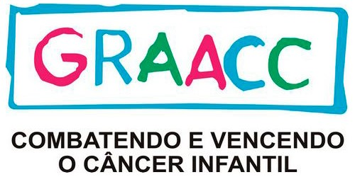
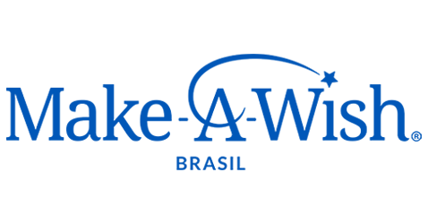

.png)
Desde 1986, a Abrace trabalha pela cura e qualidade de vida de pacientes com câncer, oferecendo assistência a crianças e adolescentes em tratamento.
(61) 32098800
(61) 32126000
(61) 993217229 (Doações)
(61) 984716264 (Assistência social)
(61) 984711050 (Parcerias)
contato@abrace.com.br
centraldedoacoes@abrace.com.br
sejaumparceiro@abrace.com.br
A Casa Hope é uma instituição que oferece apoio biopsicossocial e educacional às crianças e adolescentes de baixo poder aquisitivo de todo o Brasil. A instituição oferece diversos recursos a fim de proporcionar o aumento de suas reais chances de vida.
https://hope.org.br/fale-conosco/
O Hospital do GRAACC possui todos os recursos para diagnosticar e tratar o câncer infantojuvenil, em uma perspectiva multiprofissional, integrada e humanizada. É o primeiro centro médico brasileiro especializado em oncologia pediátrica e receber a acreditação internacional JCI, chancelando a excelência e a segurança de seus procedimentos e condutas. Com uma equipe fortemente capacitada, alcança altos índices de cura. Tudo em um ambiente projetado para diminuir, ao máximo, o impacto do tratamento.
graacc@graacc.org.br
(11) 5908-9100
A Associação de Apoio à Criança com Câncer é uma organização social sem fins lucrativos fundada em 02 de julho de 1985, cuja missão é dar apoio biopsicossocial e existencial à criança com câncer e seu familiar. Oferecemos apoio incondicional à criança e adolescente com câncer. Para tal, a AACC acolhe pessoas que necessitam de tratamento e fornece gratuitamente hospedagem, alimentação, suporte educacional, transporte, orientação psicossocial e existencial a famílias de crianças e adolescentes portadoras de câncer, as quais moram distantes da cidade do tratamento.
http://www.aacc.org.br/fale-com-a-aacc/
A finalidade dessa associação é promover a assistência social, o voluntariado, os direitos humanos, a cidadania, a dignidade e outros valores universais através da realização de sonhos de crianças portadoras de doenças graves, cujas vidas estejam em risco, e sejam elegíveis ao benefício.
+55 11 5081-3601
contato@makeawish.org.br

É uma iniciativa que recebe doações de cabelos, os transformam em perucas e doam para crianças e mulheres diagnosticadas com doenças que causam a queda dos cabelos.
cabelegria@gmail.com
(11) 3241-5795